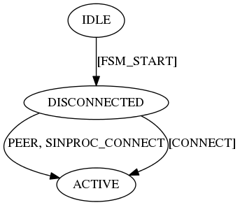
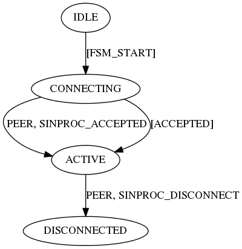
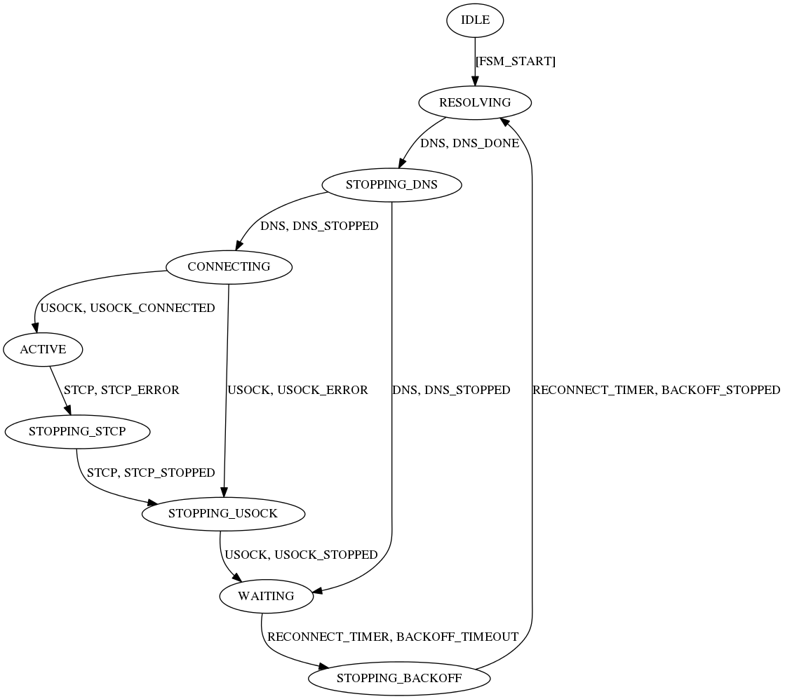
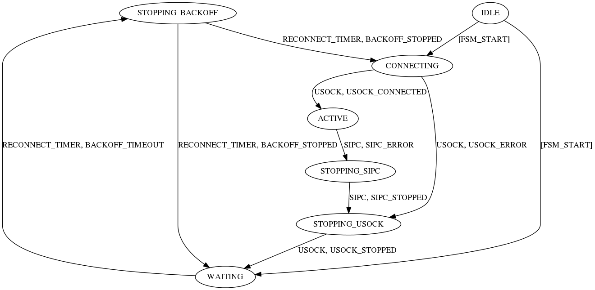
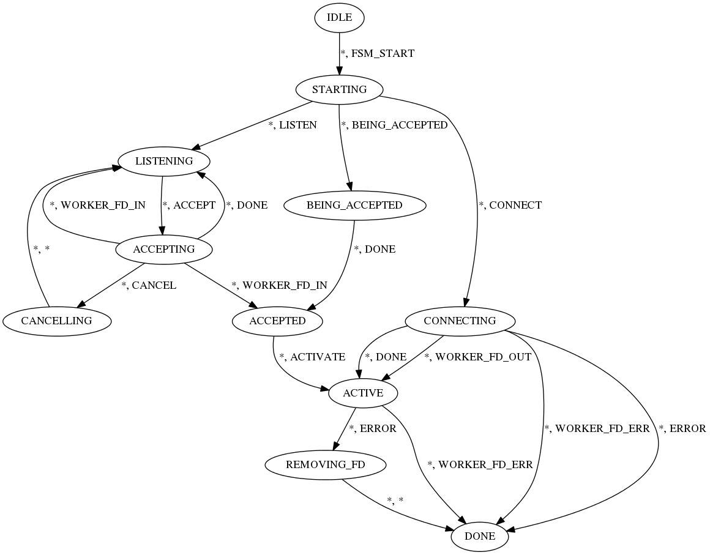
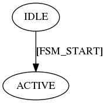
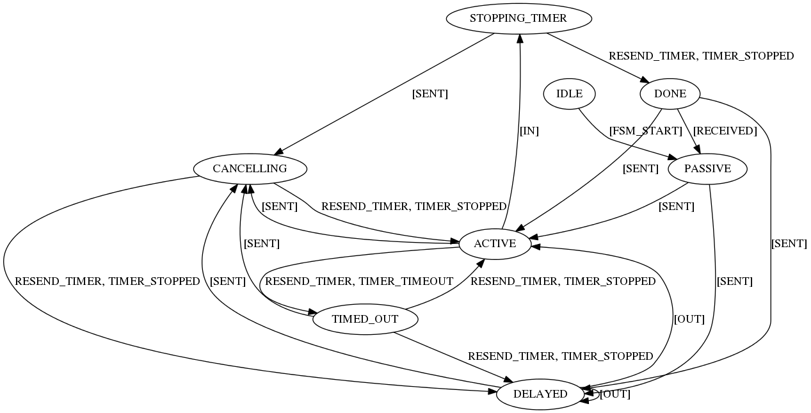

State diagrams
nn_binproc_handler
Source file: src/transports/inproc/binproc.c

nn_cinproc_handler
Source file: src/transports/inproc/cinproc.c

nn_sinproc_handler
Source file: src/transports/inproc/sinproc.c

nn_atcp_handler
Source file: src/transports/tcp/atcp.c

nn_stcp_handler
Source file: src/transports/tcp/stcp.c

nn_btcp_handler
Source file: src/transports/tcp/btcp.c

nn_ctcp_handler
Source file: src/transports/tcp/ctcp.c

nn_streamhdr_handler
Source file: src/transports/utils/streamhdr.c

nn_dns_handler
Source file: src/transports/utils/dns.c

nn_sipc_handler
Source file: src/transports/ipc/sipc.c

nn_bipc_handler
Source file: src/transports/ipc/bipc.c

nn_cipc_handler
Source file: src/transports/ipc/cipc.c

nn_aipc_handler
Source file: src/transports/ipc/aipc.c

nn_usock_handler
Source file: src/aio/usock.c

nn_timer_handler
Source file: src/aio/timer.c

nn_sock_handler
Source file: src/core/sock.c

nn_ep_handler
Source file: src/core/ep.c

nn_req_handler
Source file: src/protocols/reqrep/req.c

nn_surveyor_handler
Source file: src/protocols/survey/surveyor.c